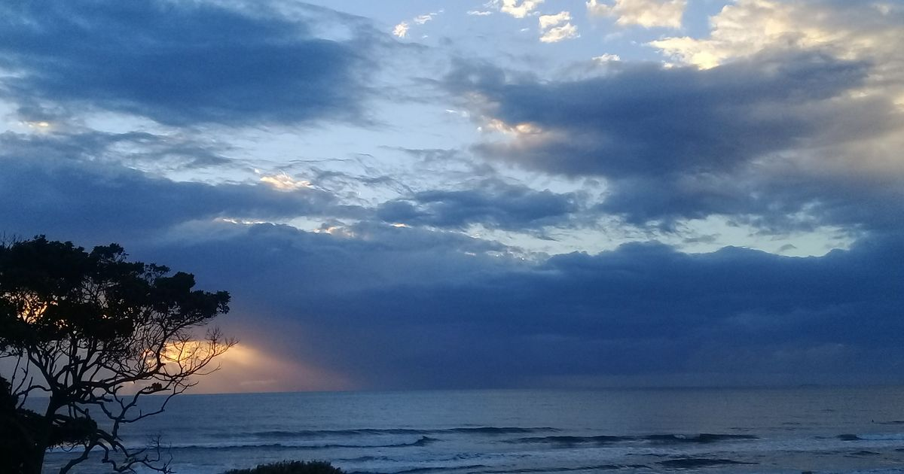
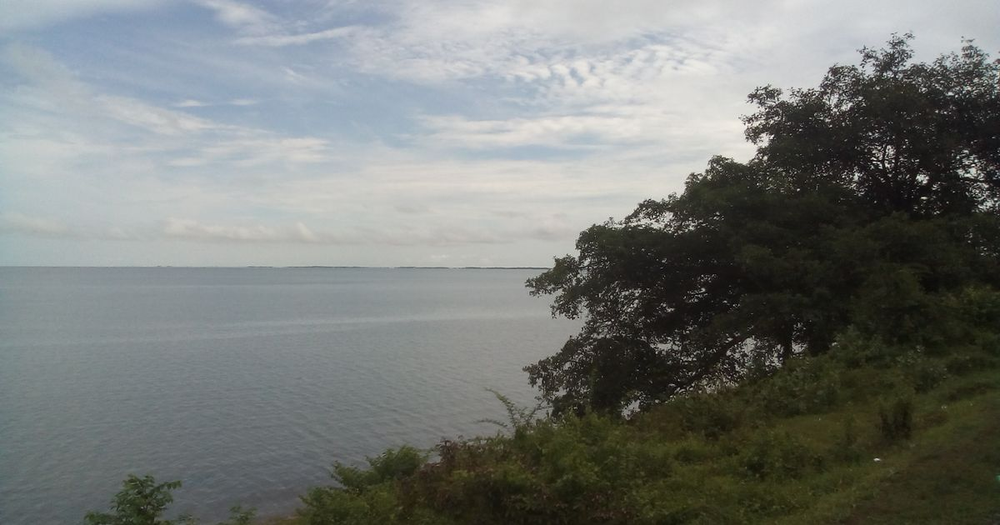
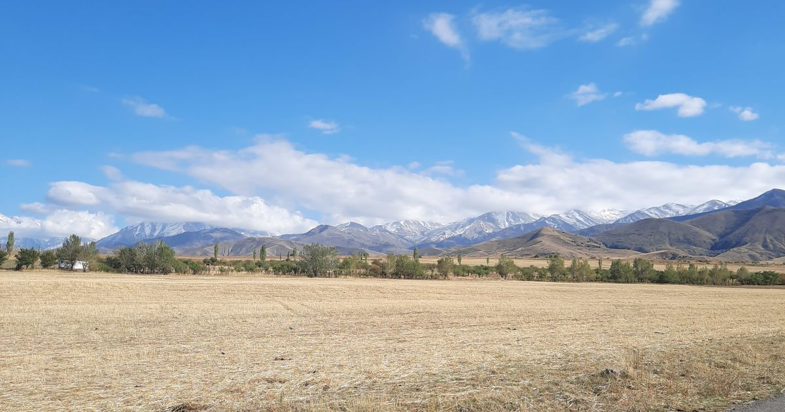

Chevening Scholarship 2026: How to Win It
How to win a Chevening Scholarship in 2026, covering eligibility, funding, the four essays, the interview and the university offer deadline.
In-depth, up-to-date guides on winning scholarships, writing standout applications, internships and studying abroad — 86 articles and counting.

How to win a Chevening Scholarship in 2026, covering eligibility, funding, the four essays, the interview and the university offer deadline.

Everything you need to apply for the Fulbright Foreign Student Program in 2026, from eligibility and funding to essays, interviews and winning tips.

Understand the DAAD scholarship, from EPOS and study grants to research funding, plus eligibility, benefits, and a step-by-step application guide.

A 2026 step-by-step guide to Erasmus Mundus Joint Masters applications, including the €1,400 monthly scholarship, deadlines and insider tips.

A practical guide to studying in Germany for free, covering tuition-free public universities, real costs, visa proof of funds, and living-cost scholarships.

The major fully funded routes to study in the UK, who runs them, who qualifies, and how to build an application that wins.

How Canadian scholarship funding works across federal, provincial, and university levels, and how to find the right award for your level of study.

How the Australia Awards and the Research Training Program fund international students, and how to apply for each successfully.

Everything you need to know about the MEXT scholarship, Japan's fully funded government award, including the two application routes and how to apply.
A full breakdown of the Global Korea Scholarship, South Korea's fully funded government award, including both application tracks and how to win one.
A step-by-step guide to writing a statement of purpose that admissions committees remember, with a proven structure, paragraph-by-paragraph examples, and an editing checklist.
The ten statement of purpose mistakes that quietly sink strong applicants, why each one hurts, and exactly how to fix it before you submit.

A practical guide to writing a scholarship motivation letter that convinces funders you are worth the investment, with structure, examples, and an editing checklist.
A clear breakdown of personal statement vs statement of purpose, including how they differ in focus and tone, when each is required, and how to write both well.
A complete guide to securing strong letters of recommendation, from choosing the right recommenders to giving them the materials that produce a specific, powerful letter.
Everything international students need to know about the Turkiye Burslari scholarship, from eligibility and benefits to a step-by-step application walkthrough and interview tips.
A practical guide to fully funded PhD scholarships around the world, including where to look, what they cover, and how to build an application that stands out.
A clear guide to fully funded masters scholarships without IELTS, including how English waivers work and what alternatives universities accept.
A complete walkthrough of the Chinese Government Scholarship (CSC), including application routes, required documents, and tips for winning a fully funded place.
Everything you need to know about Stipendium Hungaricum, Hungary's flagship fully funded scholarship, including benefits, eligibility and a step-by-step application guide.

A week-by-week IELTS study plan that takes you from your current level to a Band 7 or higher in six focused weeks, with section-specific strategies and honest expectations.

A practical comparison of TOEFL vs IELTS covering format, scoring, difficulty, and acceptance, so you can confidently choose the test that plays to your strengths.

The most common scholarship interview questions, why panels ask them, and structured strategies to answer with confidence, evidence, and authenticity.
Everything you need to prepare for a Chevening interview, from the panel format and core question themes to structuring answers on leadership, networking, and your UK study choices.
A step-by-step guide to building a competitive scholarship profile, covering academics, leadership, community impact, and the narrative that ties it all together.

Fall-intake scholarships reward students who start early. This month-by-month scholarship application timeline shows exactly what to do and when, from initial research to accepting your award.

Most students waste hours on scholarships they can never win. This guide shows how to find scholarships you are genuinely eligible for, using a repeatable filtering system.

Small errors sink strong candidates every year. Learn the most common scholarship application mistakes and exactly how to avoid each one before you submit.

Winning a scholarship is only half the journey. This student visa guide walks you through every step from accepting your award to arriving on campus with the right documents.
A full scholarship is not the only path abroad. Learn how to fund studies abroad by combining partial awards, work, savings, and smart budgeting into a realistic plan.

A practical guide to DAAD RISE Germany, the funded summer research internship programme that places STEM undergraduates from the US, Canada, the UK and Ireland in German research groups.

A guide to IAESTE internships: paid STEM traineeships abroad through a national committee, covering eligibility, funding, the application process and practical tips.

A 2026 guide to paid UN internships at UNICEF, UNDP, UNHCR and beyond, covering stipends, eligibility, where to apply and how to win.

What NASA internships and the L'SPACE Academy actually require, why international students are usually excluded, and the funded alternatives that work.

A practical guide to Erasmus+ traineeships: who can take part, what the grant covers, how to find a host organisation, and how to apply through your university.

A guide to paid opportunities at the OECD: the internship programme and the Junior Professional Programme, covering eligibility, funding and applications.

A practical guide to Google internships covering eligible roles, application timing, the interview process, and how to build a profile that gets read.

A strategy guide to funded summer research internships abroad: where the programmes are, how to filter for eligibility, and how to build a winning application.

A complete guide to study abroad programs for US students: the four main routes, how federal financial aid works overseas, the scholarships worth applying for, and a realistic application timeline.

The best study abroad programs in Europe for American students, compared by country, provider, cost, and how US financial aid applies.

Paid internships abroad for US students: the visa reality, paid research programs like DAAD RISE and IAESTE, paid teaching routes, and working holiday options.

How to study abroad in Europe for free or nearly free: tuition-free exchange, no-fee destinations like Germany, closing scholarships, and the hidden costs to budget.

The full list of study abroad scholarships for US students: federal awards like Gilman and Boren, nonprofit grants, provider funding, and how to stack them.

Summer study abroad programs that earn college credit: the three program types, top providers, how credit transfers, real costs, and how to fund a summer term.

Teach English abroad after graduation: TEFL vs CELTA, costs, the best-paying destinations, and the visa rules for US, Canadian, British and Australian citizens.

Real 2026 study abroad costs by country, including tuition, living expenses and visa fees, plus a budget builder that shows exactly where the money goes.

Everything you need to know about the Commonwealth Scholarship: who qualifies, what it covers, how to apply through your nominating agency, and key deadlines.

Learn how the Rhodes Scholarship works, what it covers at Oxford, who qualifies, and how to build a competitive application before your constituency deadline.

A complete guide to the Gates Cambridge Scholarship covering what it funds, who can apply, the two application rounds, and how to write the Gates essay.

Everything you need to know about Schwarzman Scholars, including what the award covers, the age and English requirements, and how to apply.

A practical guide to the Knight-Hennessy Scholars program, covering funding, eligibility, the separate Stanford application, and key deadlines.

A complete guide to the Vanier Canada Graduate Scholarship, including funding, eligibility, and the nomination process for PhD study in Canada.

A complete guide to the Marshall Scholarship for US students, covering what it funds, eligibility, the selection timeline, and application strategy.

A practical guide to KAIST scholarships for international students, covering the KAIST International Scholarship, funding levels, and the application process.

A list of academic conferences and funding mechanisms that help students attend, including travel grants, fee waivers, and volunteering discounts.

A step-by-step guide to funding your conference trip through travel grants, fee waivers, society awards, and university support.

The 2026 IELTS visa score table: minimum bands for student, work and PR routes across the UK, Canada, Australia, NZ and 10 more countries.

How to enter the DV-2027 Diversity Visa lottery, including the new passport requirement, the $1 entry fee, eligibility and scam warnings.

The honest 2026 guide to immigrating to Switzerland: quotas, the precedence rule, B and L permits, salaries and how long PR really takes.

The two real doors into Italy in 2026: the quota-free EU Blue Card for professionals and the Decreto Flussi lottery for other workers.

Everything about the 2026 New Zealand student visa, including the NZ$850 fee, the NZ$20,000/year funds requirement and 25 hrs/week work rights.

Everything Pakistani students need to apply for the UK Student visa in 2026 — visa fee, IHS surcharge, CAS, bank statement rules, biometrics and a step-by-step timeline.

A full F-1 visa guide for Pakistan: I-20 and SEVIS fee, DS-160 form, DS-160 appointment at the US embassy, bank statement rules, interview questions and processing timeline.

A detailed guide to meeting the financial / proof-of-funds requirement for a study visa from Pakistan — how much is needed per country, the 28-day rule, bank statements, and sponsor documents.

The definitive 2026 guide to fully and partially funded scholarships open to Pakistani students — country-by-country programs, eligibility, value, application windows and tips.

The most common student visa refusal reasons faced by Pakistani applicants and step-by-step ways to fix them — financial proof, documents, strong ties, interview and re-applying.
A complete 2026 guide for Pakistani students: German student visa requirements, tuition-free universities, the blocked account, admission requirements, IELTS and the full processing timeline.
Top F-1 visa interview questions with model answers, the US visa interview documents you need, mistakes to avoid, and a practical F-1 visa interview preparation schedule.
How to win fully funded MBA scholarships in 2026: the real funding landscape, MBA scholarships without GMAT, deadlines and admission requirements, with Pakistan-specific routes.

How many hours can international students work, which part-time jobs for students abroad pay best, on-campus openings, wages, and every international student working rights rule that matters.

A complete 2026 guide to the Australia student visa from Pakistan: Subclass 500 visa requirements, the GTE statement, OSHC student health cover, costs, processing time and financial evidence.
A complete 2026 guide for Pakistani students planning to study in Malaysia: student visa from Pakistan, requirements, processing time, fees, living costs, top universities and scholarships.
A complete 2026 guide to the Canada student visa from Pakistan: study permit requirements, the Provincial Attestation Letter, processing time, proof of funds, costs, no-IELTS routes and the PGWP.

Study abroad without IELTS for Pakistani students: which countries and universities accept no-IELTS applications, the medium of instruction certificate, waivers and the honest rules that apply.
A complete 2026 guide to the Italy student visa from Pakistan: requirements, the Universitaly pre-enrolment portal, apostille and legalisation, processing time, costs and scholarships in Italy.
A complete 2026 guide for Pakistani students planning to study in Turkey: student visa requirements, processing time, costs, Turkiye Burslari scholarship and no-IELTS study routes.
Waiting on a delayed UK student visa from Pakistan? Learn the real 2026 processing times, why applications slow down, how to escalate with UKVI, and exactly what to do if your CAS, bank balance dates or travel plans are at risk.
Planning the Fall 2027 intake? See the real application deadlines for the US, UK, Canada, Australia and Europe — including scholarship cutoffs and a month-by-month planner for September 2027 admission.
A plain-language roundup of the biggest student visa changes taking effect in 2026 — the US F-1 fixed admission rule, Canada's cap and Master's/PhD PAL exemption, UK maintenance and dependant rules, and Australia's Genuine Student requirement.
Canada's 2026 study permit cap, the Master's and PhD PAL exemption effective January 2026, proof-of-funds thresholds, and a step-by-step application path for students from Pakistan.
From 15 September 2026 F-1 students are admitted for a fixed period instead of duration of status: up to 4 years on the I-20, an Admit Until Date on the I-94, a 30-day grace period and a new extension-of-stay process.
Study gaps after FSc, bachelor's or during a degree do not automatically disqualify scholarship applications. Understand how selection panels and visa officers read gaps, and how to explain yours honestly and well.
The January 2027 intake is a real, often less crowded route for study in the UK, Australia, New Zealand and Ireland. Know which universities enrol in January, when to apply, and how the visa and funding steps fit around the build-up.

Convert your Pakistani CGPA or percentage honestly for US, UK, German, Canadian and Australian applications. The rules differ by country, and most universities do the official conversion themselves.
Pakistani nurses and nursing students have two realistic routes abroad: apply as a study applicant to a nursing programme, or work as a qualified nurse through the NMC and NHS pathway. This guide covers requirements, English tests, costs and visas for both.
Every European destination handles student health insurance differently: Germany ties it to enrolment, Italy to your residence permit, the UK folds it into your visa fee. This guide compares rules, prices and coverage so you budget correctly.